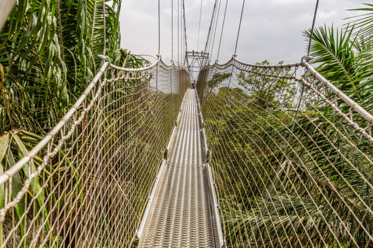

Discover Lagos, Nigeria
Lekki Conservation

The Lekki Conservation Centre Lagos Nigeria
The Lekki Conservation Centre in Lagos, Nigeria, is a prominent nature reserve and ecotourism destination, known for its 401-meter-long canopy walkway, the longest in Africa, and its focus on preserving the diverse flora and fauna of the Lekki Peninsula
The Yusufari Sand Dunes
Yobe State, NigeriaStunning example of desert landscape, offering a unique experience for nature lovers and adventurers. These dunes, part of the Sahara Desert.
Osun Osogbo Sacred Place
Osogbo, Osun State, NigeriiaThe Osun-Osogbo Sacred Grove is a UNESCO World Heritage site located in Osogbo, Nigeria, known for its cultural and historical significance as a sacred forest and shrine dedicated to the Yoruba goddess Osun.
National Theater
Lagos, NigeriaThe National Theatre, the most important cultural and artistic center of Nigeria, whose construction was completed in 1976, is being renovated after 45 years..
Marine Lake
Lagos, NigeiraThe term "marine lake" in Lagos, Nigeria, most likely refers to the Lagos Lagoon, a large body of water separated from the Atlantic Ocean by a sand barrier.
Olumo Rock
Lagos Abeokuta, Ogun State NigeriaOlumo Rock is a mountain in south-western Nigeria. It is located in the city of Abeokuta, Ogun State, and was normally used as a natural fortress during inter-tribal warfare in the 19th century.
Iyake Suspended Lake
Ado Awaye, Oyo State, NigeriaIyake Lake, one of the suspended lakes in the world is nestled in the serene town of Ado Awaye in Oyo State. This is the most extraordinary adventure to embark.
Gurara Waterfalls
Gurara, Niger State, Nigeria.Gurara Waterfalls is located in Gurara, a local government area of Niger State, North Central Nigeria.The waterfalls is approximately 30 metres in height and it lies on the Gurara River along the Suleja-Minna Road.